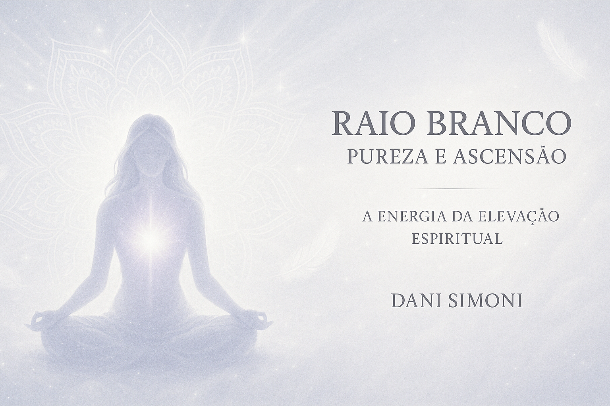

✨ O que você encontrará neste eBook:
- Ensinamentos sobre a energia da pureza e ascensão
- Conexão com Mestre Seraphis Bey e Arcanjo Gabriel
- Afirmações de luz, perdão e libertação
- Práticas com Reiki e meditações com luz branca
- Ritual da Chama Branca para elevação vibracional